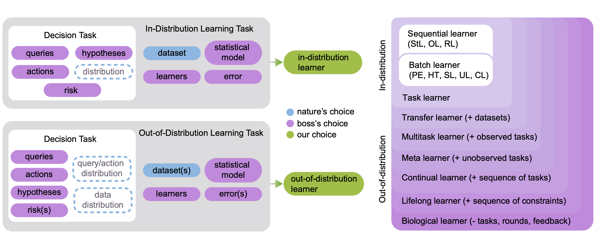
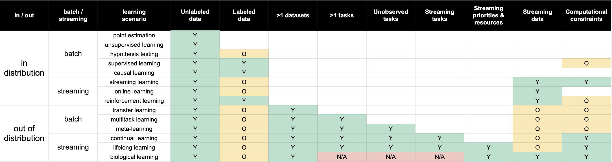

### Taxonomy of Learning Paradigms </img> </img> --- ### New Measures for Learning Efficacy Learning Efficiency - $\mathcal{E}_f(\mathbf{S})$ is error of hypothesis outputted by $f$ trained on dataset $\mathbf{S}$. $$ LE_f(\mathbf{S}^A, \mathbf{S}^B) = \frac{\mathcal{E}_f(\mathbf{S}^A)}{\mathcal{E}_f(\mathbf{S}^B)} $$ Weak OOD Learning - $\mathbf{S}_{m, n}$ amalgamated dataset. $m$ out-of-task data points, and $n$ target task data points. - $ f(\mathbf{S}\_{m, n}) = \hat{h}_{m, n} $ is hypothesis obtained from amalgamated dataset. - $ f(\mathbf{S}\_{n}) = \hat{h}_{n}$ is hypothesis obtained from just target data. $$ P\_{\mathbf{S}\_{m, n}}[R\_{X, Y}(\hat{h}\_{m, n}) < R\_{XY}(\hat{h}\_{n}) - \varepsilon ] \geq 1 - \delta $$ --- ### New Measures for Learning Efficacy We weakly OOD learn if above true for all $\delta > 0$, $m \geq M$, $n \geq N$, all distributions $P_{\mathbf{S}_n, X, Y}$, for some $\varepsilon > 0$ and algorithm $f$. Strong OOD Learning - $R^*$ is Bayes optimal risk. $$ P\_{\mathbf{S}\_{m, n}}[R\_{X, Y}(\hat{h}\_{m, n}) < R^* + \varepsilon ] \geq 1 - \delta $$ We strongly OOD learn if above true for all $\varepsilon, \delta > 0$, $m \geq M$, $n \geq N$, all distributions $P_{\mathbf{S}_n, X, Y}$, for some algorithm $f$. --- ### Theoretical Results - Weak OOD learning does not imply strong OOD learning. - Weak OOD learning implies transfer learning (learning efficiency > $1$, meaning we do better with out-of-task data).